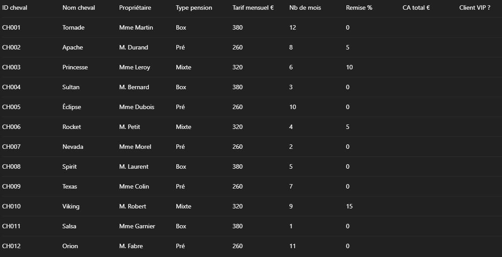
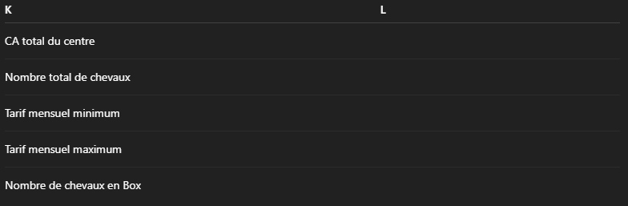
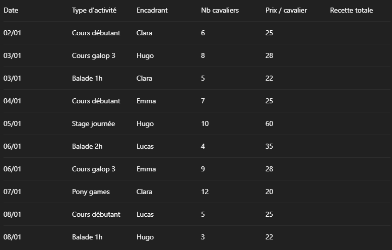
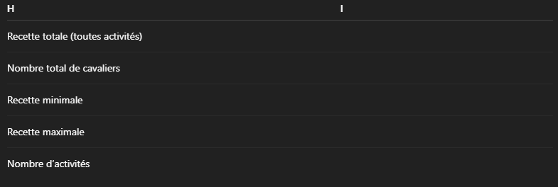
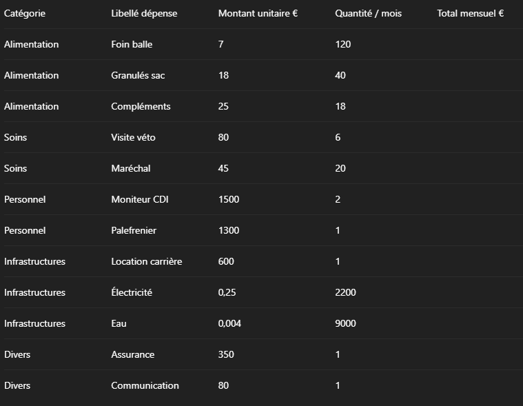
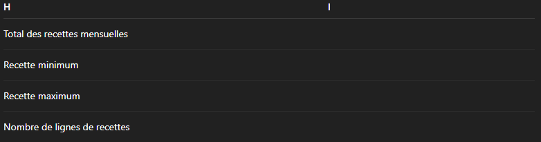

Contexte
Vous travaillez dans un centre équestre. Vous devez suivre les chevaux en pension et le chiffre d’affaires que cela génère. On va utiliser le tableur comme un vrai outil de gestion.
Exercice 1 – Pensions des chevaux
- Créez un document Excel
- Enregistrez le sous "Pension_chevaux_nom-élève_prénom-élève" (relevé à la fin de la séance)
- Nommez la première feuille: Exercice_1
- Copiez le tableau suivant: 
-
Mettre en forme:
- En-têtes en gras, centrées
- Colonnes E, H en format monétaire
- Ajuster les largeurs.
- Dans H2, calculer le CA total en tenant compte de la remise: CA = Tarif mensuel × Nb de mois × (1 – Remise/100)
- Copier la formule de H2 vers le bas jusqu’à H13.
-
On considère qu’un client est VIP si le CA total de son cheval est supérieur ou égal à 2 500 €.
-
Dans I2, écrire une formule qui affiche :
- "VIP" si H2>=2500
- "Standard" sinon
- Recopier jusqu’à I13.
-
Dans I2, écrire une formule qui affiche :
- Créer une petite zone de récapitulatif à côté (par ex. à partir de K2) :
- Recopiez le tableau suivant: 
- En L2, calculer le CA total du centre (somme de la colonne H)
- En L3, calculer le nombre total de chevaux (nombre de lignes de données)
- En L4, chercher le tarif mensuel minimum (colonne E)
- En L5, chercher le tarif mensuel maximum
- En L6, combien de chevaux sont en Box ? :
- En L7, calculez le tarif mensuel moyen :
- En L8, calculez le CA moyen par cheval :
-
Interpréter les valeurs:
- En moyenne, un cheval rapporte combien sur la période ?
- Le tarif moyen, il est plus proche du pré ou du box ?
- Ajouter un en-tête en J1 : "CA arrondi €"
- En J2, arrondir le CA total à l’euro près (pas de décimales)
- Recopier jusqu’à J13.
Exercice 2 – Activités du centre équestre & graphique
- Créez une nouvelle feuille dans le document en cours
- Nommez la feuille: Exercice_2
- Copiez le tableau suivant: 
-
Mettre en forme:
- Dates alignées au centre
- Colonnes E, F en €
- En-têtes en gras.
- Dans F2, calculer la recette
- Recopier jusqu’à F11.
- Créer une zone récap en H :
- Copiez le tableau suivant: 
- I2 : somme de toutes les recettes (colonne F)
- I3 : nombre total de cavaliers (somme de D)
- I4 : plus petite recette
- I5 : plus grande recette
- I6 : nombre d’activités réalisées (nombre de lignes)
- I7 : nombre moyen de cavaliers/séance
- I8 : Recette moyenne par activité
-
Interpréter les valeurs:
- On a en moyenne X cavaliers par activité. Est-ce que ça vous semble beaucoup / peu ?
- La recette moyenne par activité est de …€. Quelles activités sont au-dessus de la moyenne ?
- Ajouter un en-tête en G1 : "Grosse séance ?"
- Si le nombre de cavaliers est ≥ 8, alors afficher "Oui", sinon "Non".
- Recopier jusqu’à G11.
- Faire un graphique de la recettes par type d’activité
- Donnez comme titre a votre graphique : Recette par activité.
Exercice 3 – Gestion d’un centre équestre
Partie 1
- Créez une nouvelle feuille dans le document en cours
- Nommez la feuille: Exercice_3-1
- Copiez le tableau suivant: 
-
Mettre en forme:
- En-têtes en gras
- Colonnes C, E en format monétaire
- Centrer la colonne D.
- En E2, calculer le Total mensuel
- À partir de G2, copiez le tableau suivant:
- En H2, calculer le total des dépenses :
- En H3, afficher la plus petite dépense (sur la colonne E) :
- En H4, afficher la dépense la plus élevée :
- En H5, afficher le nombre de lignes de dépenses :
- On veut repérer les lignes dont le total mensuel dépasse 1 000 €.
- Ajouter un en-tête en F1 : "Grosse dépense ?"
- En F2, écrire une formule qui affiche : "Oui" si E2>1000, sinon "Non"
- Recopier la formule jusqu’à F13.
- Mise en forme conditionnelle, colorer les “Oui” vert et les "Non" en rouge.

Partie 1
- Créez une nouvelle feuille dans le document en cours
- Nommez la feuille: Exercice_3-2
- Copiez le tableau suivant:
-
Mettre en forme:
- Mettre les en-têtes en gras
- Mettre C, E en normal, D, F en €
- Calculer la recette totale: Nb de clients × Prix moyen × Nb de séances.
- Recopier jusqu’en bas.
- Créer une zone récapitulatif à partir de H2 :
- Copiez le tableau suivant: 
- I2 : somme de toutes les recettes (colonne F)
- I3 : plus petite recette ligne par ligne
- I4 : plus grande recette ligne par ligne
- I5 : nombre de lignes de recettes
- I6 : la recette moyenne / activité
- On considère qu’une activité est “phare” si sa recette totale est ≥ 2 500 €.
- Ajouter un en-tête en colonne G1: "Activité phare ?"
- En G2, écrire une formule qui affiche : "Oui" si F2>2500, sinon "Non"
- Recopier jusqu’en bas.